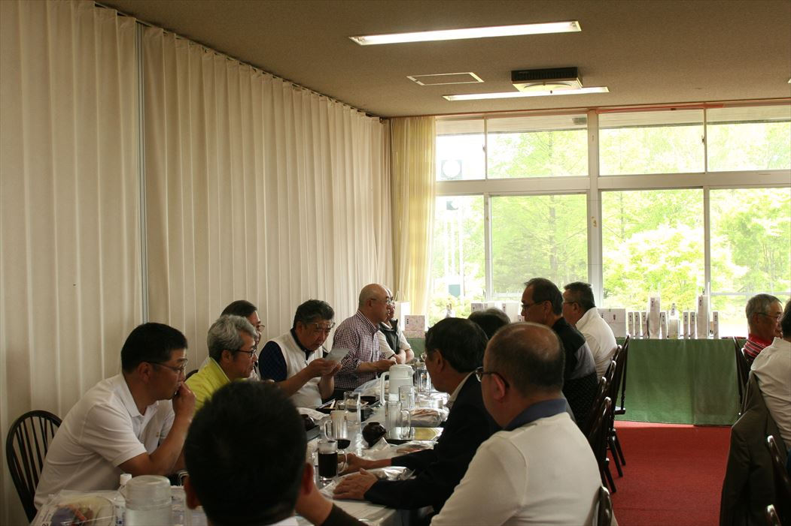
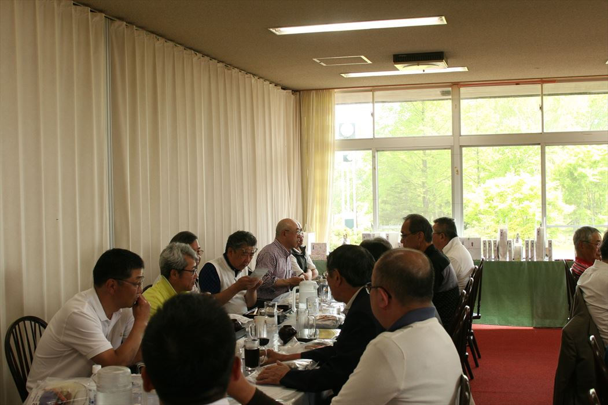

これは、ゴルフを愛してやまないが、ガンバレないオヤジたちの突兀会のゴルフ復活に賭けたトホホな戦いの記録である。
［１]．札幌突兀会のゴルフコンペ復活
話は、私たち１９期が当番であった１０年前（平成１２年当時[2017.09.01加筆]）に遡る。突兀会設立４０年目の年だった。４０周年記念にふさわしい特別な年にしなければならない。さまざまな企画案の中で次の５項目が実現した。
- 会員名簿の作成
- お楽しみ大抽選会
- ジャズバンドの生演奏
- 明石英一郎氏（２９期）の解説付き記念スライド
- ゴルフコンぺ開催
それぞれに、ちょっとしたエピソードがあるが、中でも１７年ぶりのゴルフコンペ開催については、決して忘れることはできない。役員会で『ゴルフ復活』の提案。自分の父親のような年代の大先輩からしかられているような反対意見。
結局、役員会では明確な同意を得られなかった。「突兀会の正規の行事ではなく、会の一部ゴルフ好きが開催するんだ。もちろん会計も別処理」と言い訳を用意しつつ、１７年ぶりに復活させてしまった。
小柳会長をはじめとする当時の主だった役員が後押ししてくれた。私たちの当番期としての仕事は無事終了。話はここで完結するはずだった・・・・・
［２］．ゴルフ部会の新設
当番を終えた直後から役員として残るよう再三の要請をうける。同期の堀君は受任し、私は、会務免除の条件提示を受け名ばかりの役員として彼に付き合うことにした。その後の役員改選で現在の田村会長が当時の幹事長になった。幹事長は、ゴルフを大いに奨励しゴルフ部会を設立すると共に、私を初代部会長に任命。
あの会務免除の条件は、事業仕分けのようにあっさり廃止された。すべては、私の欠席した役員会で決まったらしい。突兀会のゴルフコンペが正規に認知され喜ばしいのだが、腑に落ちない点も・・・・・
［３］．ゴルフ部会の歩み
部会の実行委員は、私と堀君の二人。「ヤツが動き出せば、オレは手伝う。」と、お互いに待機している。何も起こらない。「今年はもう無理」「納会だけはやろう」「これも立派な活動だ」さまざまな理屈をこねて数名での飲み会をすることしばしば。たとえ開催できても参加人数はなかなか二桁にならない。そんなダメ部会でもよく参加してくれるのが２１期の岡林さんや小野さんだった。
転機は、平成２０年の２７期が当番の年だった。２７期には、当時、真駒内カントリークラブの支配人谷川さんがいた。参加人数はもちろん、コンペルームでの料理も景品も大変すばらしいものだった。当番期主催のゴルフコンペは当然大成功。「本気で実行すればこんな立派なゴルフコンペができるんだ。」「いつまでも堀君に頼っていてはダメだ。頼るなら谷川さんだ。」ということに気がついた。
今年は、秋のゴルフと納会を同一年に実施できた。しかも参加人数はいずれも２０名前後。以前の暗い過去を思えば夢のようだ。だが、いつまでも部会長の職に留まる訳にいかない。 "○林さん"（誰…？）のようなゴルフを愛する優秀な後輩が育っているのだから。
風の中の昴 砂の中の銀河♪・・・・・・ (完)
 
